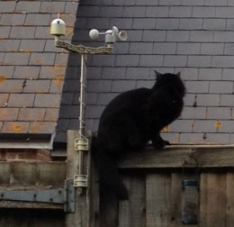
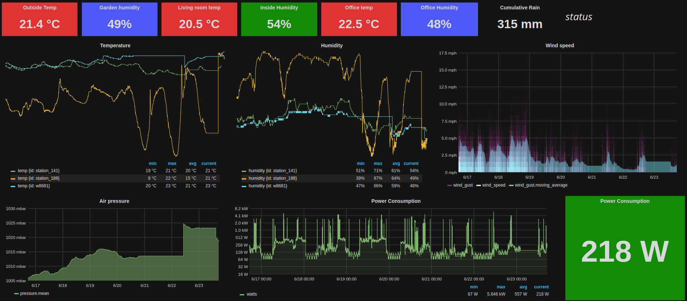
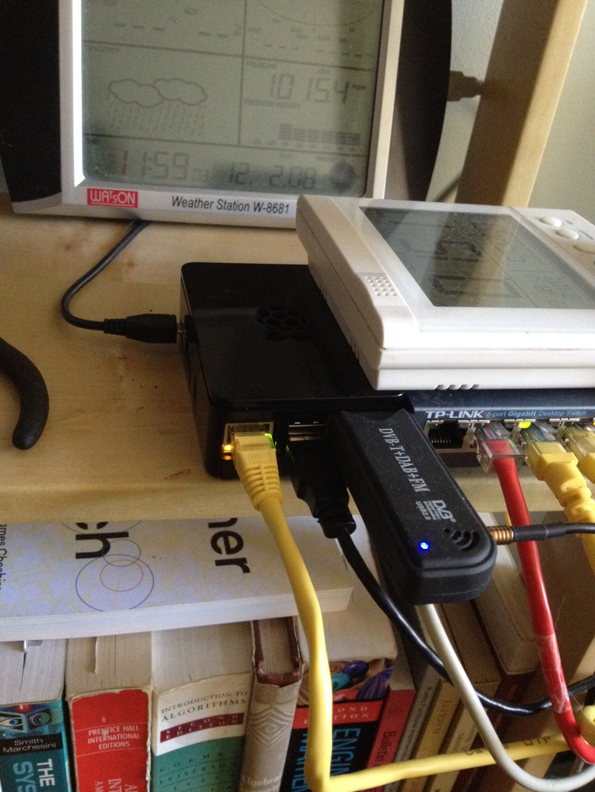
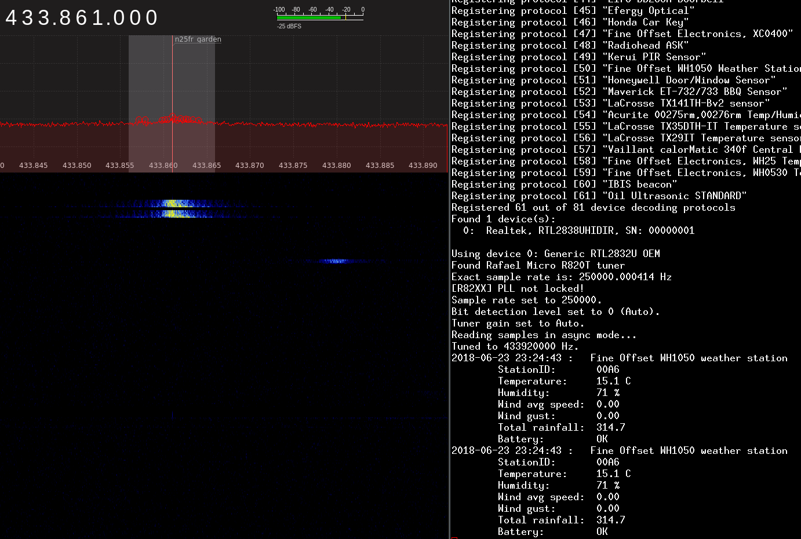

For ~8 years now, I've operated a personal weather station using a Watson W-8681. The station includes a number of sensors, including wind speed, wind direction, temperature, and humidity. Despite having to replace the brittle anemometer twice, the station has served me well during this time. I had used Jim Easterbrook's excellent pywws package to extract data from the unit's USB interface, push readings to Met Office "wow" and Weather Underground. I had also modified pywws, adding the ability to push weather updates to a pusher channel from which I had based a basic web-socket weather status page on. I used this in combination with the gnuplot output from pywws as a personal/local weather dashboard.
This configuration worked well for many years until eventually the external transmitter failed. Annoyingly, Maplin no-longer stocked the specific transmitter, although did stock a slightly different version operating on a *different* radio frequency. In addition, the transmitter did not support my wind direction sensor. I could live without the wind- direction sensor, however the different frequency was an issue. My W-8681 unit operates on 868.3MHz, while the replacement transmitter operates on the popular 433MHz range. (Note: Sadly, Maplin has now closed down).
About the same time, I had also started to monitor my home power consumption using an OWL-CM160 energy monitor. Like the W-8681, it is possible to extract data from the device over a USB interface. With my broken weather station and power monitor, I created a new weather/power monitoring dashboard based on InfluxDB. (a time series database.)
Using a mix of disparate sensors, I now have a pretty good overview of the status of my domicile. I also receive a message on my phone (over Telegram messenger) when the outside temperature drops below freezing and for fun, whenever the kettle is used.
My configuration is depicted in the ASCII below.
+----------+
+------------------+ +-------+ +-------+ |anemometer|
|power | 433mhz |cm160 | |n25fr |<-----------------+
|consumption +------->|=======| |=======|
|sensor+transmitter| |power | |garden |<-----------------+
+------------------+ |base | +---+---+ |rain gauge|
|station| | +----------+
+---+---+ |
| |
|usb |433mhz
+-------+ | v +------+
|wh1080 | v +---------+ |n25fr |
|=======| +--+ |rtl2832u | |======|
|weather+---------->|pi|<---------+=========|<--------+living|
|base | usb ++-+ usb |tv dongle| 433mhz |room |
|station| | +---------+ +------+
+-------+ |
|http
|
v
+---------+ +--------+ +-------+
|kapacitor|<-------+influxdb+-------->|grafana|
+-----+---+ +--------+ +--+----+
| |
| |
v |
+--------+ +-----+ v
|telegram+---------->|phone+----------> me :)
+--------+ +-----+
At the base of this configuration is a raspberry pi (model b) running Debian. The pi is connected to my old W-8681 weather station via USB, from which I still make use of pywws for reading data. To overcome the issue with different radio frequencies, the W-8681 no longer receives input from the external transmitter. Instead, the pi receives the signal directly via software defined radio over a USB TV dongle. In addition, the pi receives power consumption data via USB from the CM-160.
The nice thing about this configuration (for me at least) is that it makes use of otherwise depreciated components and abstracts away hardware specific bits and pieces. The time series database/the endpoint I push to, is agnostic to the source of the data: Everything is a sensor.
I have 2 n25fr temperature+humidity sensors. The sensor outside is also attached to a anemometer and rain gauge. The indoor sensor is located in my living room.
Both of these sensors were designed to transmit data to an n25fr (WH1050) weather base station which I do not have. Instead, I intercept the sensor readings using a USB TV dongle.
Every 48 seconds, the sensor transmits a burst of data containing a number of readings. Shown above and below is a spectrogram showing the transmission from my garden sensor on 433.861 MHz (the other transmits on a slightly different frequency in the 433 MHz range). I used gqrx to receive this.
The transmission contains 10 bytes of information including temperature, humidity, rainfall and wind speed. I used rtl_433 to decode this info. rtl_433 is a great project which supports decoding of over 100 devices which operate on the 433 MHz frequency. The tool has the option to output decoded messages as JSON objects, which I use in this setup.
{
"id": 166,
"battery": "OK",
"speed": 0.0,
"gust": 1.224,
"humidity": 51,
"rain": 314.7,
"model": "Fine Offset WH1050 weather station",
"temperature_C": 22.1,
"time": "2018-06-27 22:44:46"
}
Every 48 seconds I receive an update from each of the 2 sensors in the form of JSON data, which I then pipe to a script which in turn pushes the update (if something has changed) to my InfluxDB instance.
The base station once received input from an external sensor similar to the n25fr which used to operate on 868.3 MHz and also transmit wind direction. Since the transmitter died, I'm left with just the base station, which currently sits in my office to monitor temperature, humidity and record air pressure. The unit is connected to the Raspberry PI via USB.
I had previously used pywws to dump data and upload to wunderground, met office wow and my own pusherapp based dashboard. Since the external sensor died, I have defaulted to using the output of pywws-testweatherstation from pywws as input to a script which pushes updates to InfluxDB.
The energy monitor base station is also connected to the rpi via USB. I'm using an OWL 160 which receives power usage updates from a magnetic sensor attached to the incoming power cable to my house (inside the power meter box). The sensor itself also transmits on 433 MHz, but for now, I just rely on the OWL unit to receive this signal.
To read data from the OWL unit, I use eagle-owl. Again, I pipe the output of this tool to a script which, in turn, pushes a reading to InfluxDB containing my current electricity use in kWh.
Monitoring my home power usage has been pretty useful for me. Since doing this, I've reduced my power draw significantly. Starting with my computers, I use the most optimal PSU for my load possible, I only use LED lights etc. Being aware of power consumption trend is more useful than real time kWh alone. Although not terribly exciting, I have also been able to diagnose a failing refrigerator compressor quickly using this data. This was detected from an abnormal step- pattern in kWh: the compressor would usually turn on at specific intervals, and one day began fluctuating erratically until settling into an always-on state. This would have been quite expensive if not caught early, given the high amount of power refrigerators draw when active.
I have pushed some code to Github which is specific to my setup, but may be of use to anyone looking to do something similar.
EOF